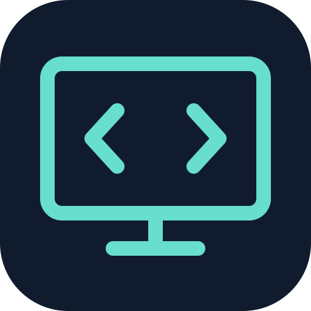

CODETETHER · WINDOWS
Your screen. AI on your iPhone.
Share a chosen window with CodeTether. Get a live AI explanation in the iPhone app’s Screen tab.
1 · Pair your iPhone
Open Screen in CodeTether on iPhone, choose a model and instructions, then tap Pair Windows device.
2 · Choose what to share
Nothing is captured until you press Start and select a screen or window in the browser’s chooser.
NOT SHARING
Loading companion…
0 screenshots sent
3 · Read the live analysis on iPhone
Keep the iPhone Screen tab open. Uploads wait when it disconnects. Keep this Windows app open and your device awake; locked or sleeping devices cannot provide reliable capture.
Screenshots are not saved by the companion or relay. The relay keeps only the current response and a short previous summary in memory. Your selected model provider’s retention policy still applies.